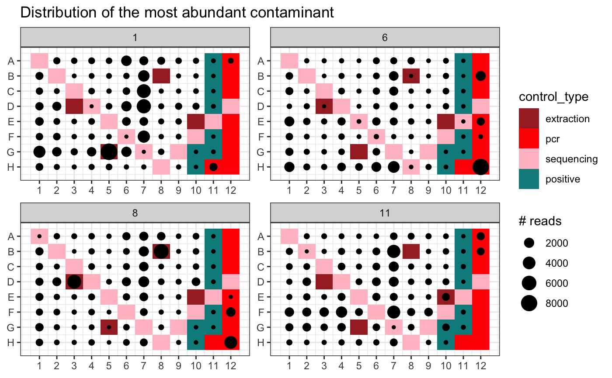

Uses negative controls to determine whether MOTUs in a metabarlist object are more likely to be genuine or contaminants.
contaslayer( metabarlist, method = "max", control_types = c("pcr", "extraction"), controls = NULL, output_col = "not_a_contaminant" )
| metabarlist | a |
|---|---|
| method | a character string specifying the detection method to be used.
Default: |
| control_types | a vector of control types contained in the column control_type
of the `pcrs` table. This parameter is not used when the parameter
|
| controls | a vector of pcr names corresponding to negative controls. |
| output_col | a character string for the column name in the `motus` table, in which the result will be stored. Default is "not_a_contaminant" |
a metabarlist with a new boolean column vector of name `output_col` in
the `motus` table indicating whether MOTUs are genuine (TRUE) or
identified as contaminants (FALSE)
In negative controls, a contaminant should be preferentially amplified since there is no competing DNA. On the other hand, a MOTU detected in negative controls is not necessarily a contaminant, it can be a genuine MOTU detected in negative controls through tag-jump issues.
The function contaslayer relies on these assumptions and detects MOTUs whose relative abundance across the whole dataset is highest in negative controls. Two methods are currently available:
method = "max" considers a MOTU as a contaminant if its frequencies across the entire dataset are highest in at least one negative control.
method = "all" considers a MOTU as a contaminant if its frequencies across all negative controls is greater than that across all samples.
tagjumpslayer, pcrslayer
for other data curation procedures.
data(soil_euk) library(ggplot2) ## Distinguish genuine MOTUs from contaminants using PCR or extraction negative controls mbl <- contaslayer(soil_euk)#> Warning: Some PCRs in metabarlist have a number of reads of zero in table `reads`!#> [1] "species_name" "rank" "scientific_name" #> [4] "path" "sequence" "not_a_contaminant"#> count GC_content #> HISEQ:204:C8E5RANXX:7:1101:7642:66295_CONS_SUB_SUB_CMP 966 43 #> HISEQ:204:C8E5RANXX:7:1101:2368:21806_CONS_SUB_SUB 14333 60 #> HISEQ:204:C8E5RANXX:7:2212:15254:15304_CONS_SUB_SUB 2 52 #> HISEQ:204:C8E5RANXX:7:1101:6494:11605_CONS_SUB_SUB 7957 49 #> HISEQ:204:C8E5RANXX:7:1101:17453:53953_CONS_SUB_SUB_CMP 5877 47 #> HISEQ:204:C8E5RANXX:7:2101:1359:22811_CONS_SUB_SUB_CMP 2 52 #> seq_length #> HISEQ:204:C8E5RANXX:7:1101:7642:66295_CONS_SUB_SUB_CMP 103 #> HISEQ:204:C8E5RANXX:7:1101:2368:21806_CONS_SUB_SUB 98 #> HISEQ:204:C8E5RANXX:7:2212:15254:15304_CONS_SUB_SUB 102 #> HISEQ:204:C8E5RANXX:7:1101:6494:11605_CONS_SUB_SUB 99 #> HISEQ:204:C8E5RANXX:7:1101:17453:53953_CONS_SUB_SUB_CMP 104 #> HISEQ:204:C8E5RANXX:7:2101:1359:22811_CONS_SUB_SUB_CMP 102 #> best_identity.order_filtered_embl_r136_noenv_EUK #> HISEQ:204:C8E5RANXX:7:1101:7642:66295_CONS_SUB_SUB_CMP 1.0000000 #> HISEQ:204:C8E5RANXX:7:1101:2368:21806_CONS_SUB_SUB 1.0000000 #> HISEQ:204:C8E5RANXX:7:2212:15254:15304_CONS_SUB_SUB 0.9803922 #> HISEQ:204:C8E5RANXX:7:1101:6494:11605_CONS_SUB_SUB 0.9494949 #> HISEQ:204:C8E5RANXX:7:1101:17453:53953_CONS_SUB_SUB_CMP 1.0000000 #> HISEQ:204:C8E5RANXX:7:2101:1359:22811_CONS_SUB_SUB_CMP 0.9803922 #> taxid_by_db.order_filtered_embl_r136_noenv_EUK #> HISEQ:204:C8E5RANXX:7:1101:7642:66295_CONS_SUB_SUB_CMP 98651 #> HISEQ:204:C8E5RANXX:7:1101:2368:21806_CONS_SUB_SUB 2759 #> HISEQ:204:C8E5RANXX:7:2212:15254:15304_CONS_SUB_SUB 2759 #> HISEQ:204:C8E5RANXX:7:1101:6494:11605_CONS_SUB_SUB 2759 #> HISEQ:204:C8E5RANXX:7:1101:17453:53953_CONS_SUB_SUB_CMP 45105 #> HISEQ:204:C8E5RANXX:7:2101:1359:22811_CONS_SUB_SUB_CMP 2759 #> phylum_name #> HISEQ:204:C8E5RANXX:7:1101:7642:66295_CONS_SUB_SUB_CMP <NA> #> HISEQ:204:C8E5RANXX:7:1101:2368:21806_CONS_SUB_SUB <NA> #> HISEQ:204:C8E5RANXX:7:2212:15254:15304_CONS_SUB_SUB <NA> #> HISEQ:204:C8E5RANXX:7:1101:6494:11605_CONS_SUB_SUB <NA> #> HISEQ:204:C8E5RANXX:7:1101:17453:53953_CONS_SUB_SUB_CMP <NA> #> HISEQ:204:C8E5RANXX:7:2101:1359:22811_CONS_SUB_SUB_CMP <NA> #> class_name #> HISEQ:204:C8E5RANXX:7:1101:7642:66295_CONS_SUB_SUB_CMP Chrysophyceae #> HISEQ:204:C8E5RANXX:7:1101:2368:21806_CONS_SUB_SUB <NA> #> HISEQ:204:C8E5RANXX:7:2212:15254:15304_CONS_SUB_SUB <NA> #> HISEQ:204:C8E5RANXX:7:1101:6494:11605_CONS_SUB_SUB <NA> #> HISEQ:204:C8E5RANXX:7:1101:17453:53953_CONS_SUB_SUB_CMP <NA> #> HISEQ:204:C8E5RANXX:7:2101:1359:22811_CONS_SUB_SUB_CMP <NA> #> order_name #> HISEQ:204:C8E5RANXX:7:1101:7642:66295_CONS_SUB_SUB_CMP Chromulinales #> HISEQ:204:C8E5RANXX:7:1101:2368:21806_CONS_SUB_SUB <NA> #> HISEQ:204:C8E5RANXX:7:2212:15254:15304_CONS_SUB_SUB <NA> #> HISEQ:204:C8E5RANXX:7:1101:6494:11605_CONS_SUB_SUB <NA> #> HISEQ:204:C8E5RANXX:7:1101:17453:53953_CONS_SUB_SUB_CMP Cercomonadida #> HISEQ:204:C8E5RANXX:7:2101:1359:22811_CONS_SUB_SUB_CMP <NA> #> family_name #> HISEQ:204:C8E5RANXX:7:1101:7642:66295_CONS_SUB_SUB_CMP Chromulinaceae #> HISEQ:204:C8E5RANXX:7:1101:2368:21806_CONS_SUB_SUB <NA> #> HISEQ:204:C8E5RANXX:7:2212:15254:15304_CONS_SUB_SUB <NA> #> HISEQ:204:C8E5RANXX:7:1101:6494:11605_CONS_SUB_SUB <NA> #> HISEQ:204:C8E5RANXX:7:1101:17453:53953_CONS_SUB_SUB_CMP Heteromitidae #> HISEQ:204:C8E5RANXX:7:2101:1359:22811_CONS_SUB_SUB_CMP <NA> #> genus_name species_name #> HISEQ:204:C8E5RANXX:7:1101:7642:66295_CONS_SUB_SUB_CMP <NA> <NA> #> HISEQ:204:C8E5RANXX:7:1101:2368:21806_CONS_SUB_SUB <NA> <NA> #> HISEQ:204:C8E5RANXX:7:2212:15254:15304_CONS_SUB_SUB <NA> <NA> #> HISEQ:204:C8E5RANXX:7:1101:6494:11605_CONS_SUB_SUB <NA> <NA> #> HISEQ:204:C8E5RANXX:7:1101:17453:53953_CONS_SUB_SUB_CMP <NA> <NA> #> HISEQ:204:C8E5RANXX:7:2101:1359:22811_CONS_SUB_SUB_CMP <NA> <NA> #> rank #> HISEQ:204:C8E5RANXX:7:1101:7642:66295_CONS_SUB_SUB_CMP family #> HISEQ:204:C8E5RANXX:7:1101:2368:21806_CONS_SUB_SUB superkingdom #> HISEQ:204:C8E5RANXX:7:2212:15254:15304_CONS_SUB_SUB superkingdom #> HISEQ:204:C8E5RANXX:7:1101:6494:11605_CONS_SUB_SUB superkingdom #> HISEQ:204:C8E5RANXX:7:1101:17453:53953_CONS_SUB_SUB_CMP family #> HISEQ:204:C8E5RANXX:7:2101:1359:22811_CONS_SUB_SUB_CMP superkingdom #> scientific_name #> HISEQ:204:C8E5RANXX:7:1101:7642:66295_CONS_SUB_SUB_CMP Chromulinaceae #> HISEQ:204:C8E5RANXX:7:1101:2368:21806_CONS_SUB_SUB Eukaryota #> HISEQ:204:C8E5RANXX:7:2212:15254:15304_CONS_SUB_SUB Eukaryota #> HISEQ:204:C8E5RANXX:7:1101:6494:11605_CONS_SUB_SUB Eukaryota #> HISEQ:204:C8E5RANXX:7:1101:17453:53953_CONS_SUB_SUB_CMP Heteromitidae #> HISEQ:204:C8E5RANXX:7:2101:1359:22811_CONS_SUB_SUB_CMP Eukaryota #> path #> HISEQ:204:C8E5RANXX:7:1101:7642:66295_CONS_SUB_SUB_CMP root@no rank:Eukaryota@superkingdom:Stramenopiles@no rank:Chrysophyceae@class:Chromulinales@order:Chromulinaceae@family #> HISEQ:204:C8E5RANXX:7:1101:2368:21806_CONS_SUB_SUB root@no rank:Eukaryota@superkingdom #> HISEQ:204:C8E5RANXX:7:2212:15254:15304_CONS_SUB_SUB root@no rank:Eukaryota@superkingdom #> HISEQ:204:C8E5RANXX:7:1101:6494:11605_CONS_SUB_SUB root@no rank:Eukaryota@superkingdom #> HISEQ:204:C8E5RANXX:7:1101:17453:53953_CONS_SUB_SUB_CMP root@no rank:Eukaryota@superkingdom:Rhizaria@no rank:Cercozoa@no rank:Cercomonadida@order:Heteromitidae@family #> HISEQ:204:C8E5RANXX:7:2101:1359:22811_CONS_SUB_SUB_CMP root@no rank:Eukaryota@superkingdom #> sequence #> HISEQ:204:C8E5RANXX:7:1101:7642:66295_CONS_SUB_SUB_CMP ccccaacttcctttggttagtcaccaaaagtccctctaagaagcttacgtcaatactagtgcattaacaaaactatttagcaggcgggggtctcgttcgttaa #> HISEQ:204:C8E5RANXX:7:1101:2368:21806_CONS_SUB_SUB cgcgcacttccatcggcttgagccgatagtccccctaagaagccagcggcccgcaaatgcggaccgggctatttaagggccgaggtctcgttcgttat #> HISEQ:204:C8E5RANXX:7:2212:15254:15304_CONS_SUB_SUB ctcaaacttccgtggcctaaaaggccatagtccctctaagaagctggccgtgcagggatacctccacatagctagttagcaggctgaggtctcgtccgttaa #> HISEQ:204:C8E5RANXX:7:1101:6494:11605_CONS_SUB_SUB ctcatacttccattggcttgcgccaatagtccctctaagaagccagcgtactgccagagcaatacgggctagttagcaggttaaggtctcgttcgttat #> HISEQ:204:C8E5RANXX:7:1101:17453:53953_CONS_SUB_SUB_CMP ctcgaacttccgtcggctacacaccgatagtccctctaagaagtcacgtccaaagaaagaatcctttgtcgaactatttagcaggtcgaggtctcgttcgttaa #> HISEQ:204:C8E5RANXX:7:2101:1359:22811_CONS_SUB_SUB_CMP ctcaaacttccttggcttaagcggccatagtccctctaagaagctggccgcggagggattcctcctcatagctagttagcaggctgaggtctcgttcgttaa #> not_a_contaminant #> HISEQ:204:C8E5RANXX:7:1101:7642:66295_CONS_SUB_SUB_CMP FALSE #> HISEQ:204:C8E5RANXX:7:1101:2368:21806_CONS_SUB_SUB FALSE #> HISEQ:204:C8E5RANXX:7:2212:15254:15304_CONS_SUB_SUB FALSE #> HISEQ:204:C8E5RANXX:7:1101:6494:11605_CONS_SUB_SUB FALSE #> HISEQ:204:C8E5RANXX:7:1101:17453:53953_CONS_SUB_SUB_CMP FALSE #> HISEQ:204:C8E5RANXX:7:2101:1359:22811_CONS_SUB_SUB_CMP FALSE#> [1] 190## Distribution of the most abundant contaminant MOTU in the PCR plate design contaminants <- rownames(mbl$motus)[mbl$motus$not_a_contaminant == FALSE] max.conta <- contaminants[which.max(mbl$motus[contaminants, "count"])] p <- ggpcrplate(soil_euk, legend_title = "# reads", FUN = function(m) { m$reads[, max.conta] } ) p + scale_size(limits = c(1, max(soil_euk$reads[, max.conta]))) + ggtitle("Distribution of the most abundant contaminant")## Identify contaminants using extraction negative controls only mbl <- contaslayer(soil_euk, control_types="extraction", output_col= "not_an_ext_contaminant")#> Warning: Some PCRs in metabarlist have a number of reads of zero in table `reads`!#> [1] "species_name" "rank" "scientific_name" #> [4] "path" "sequence" "not_an_ext_contaminant"#> [1] 66